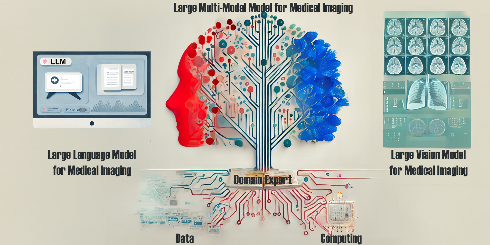
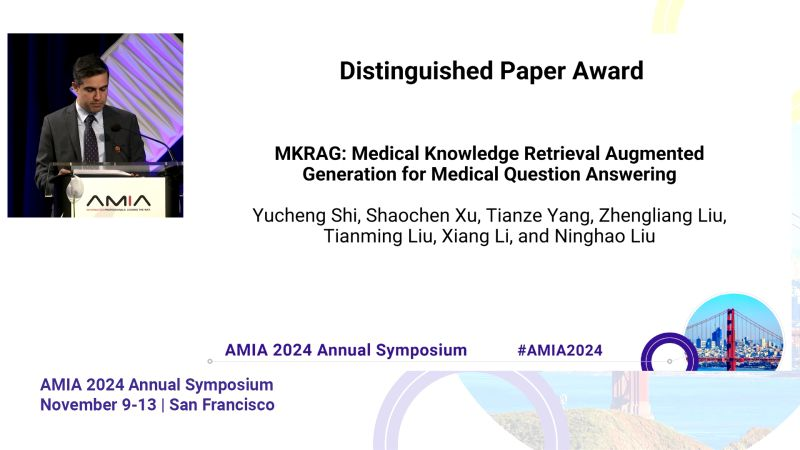
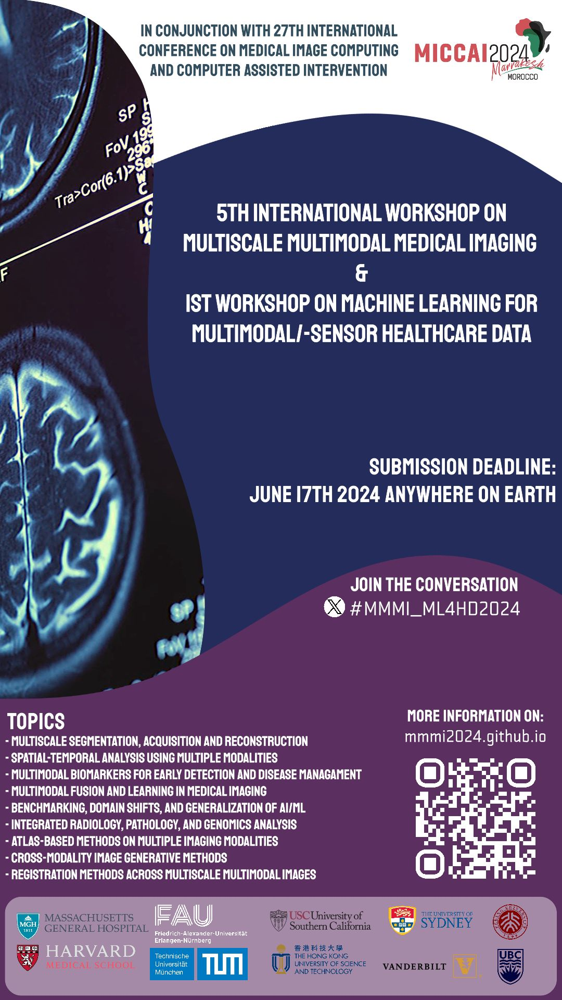
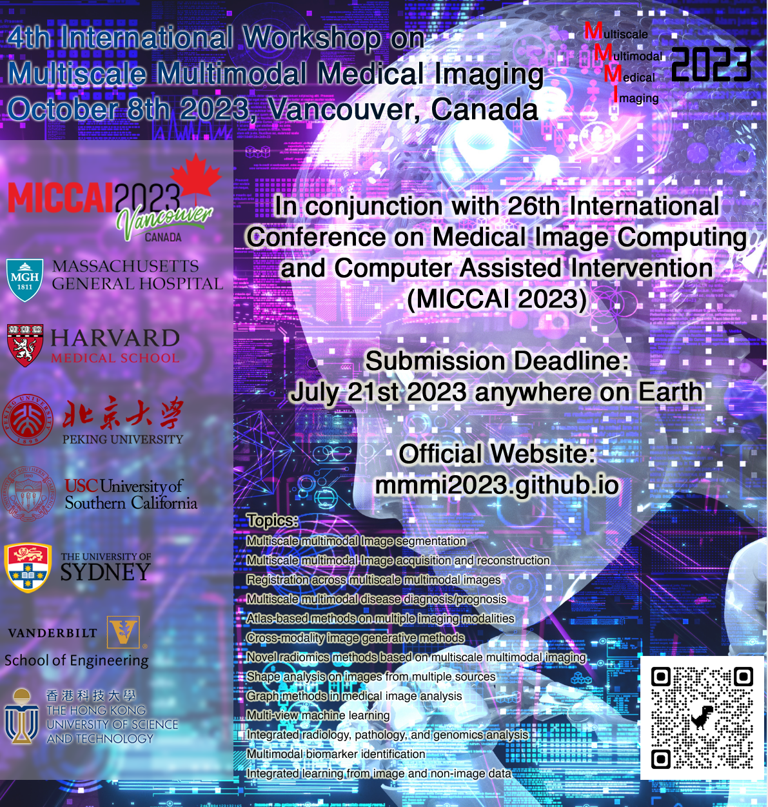
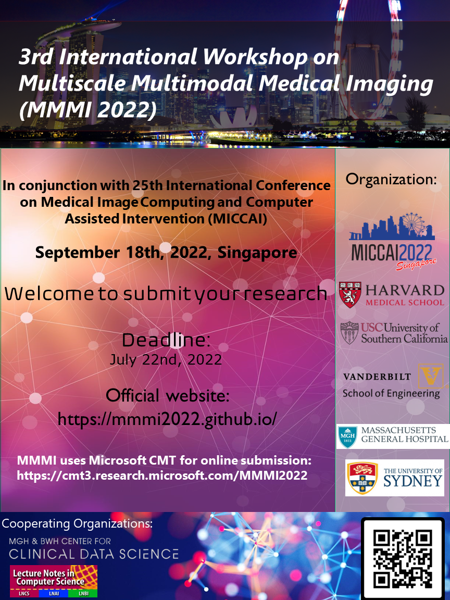
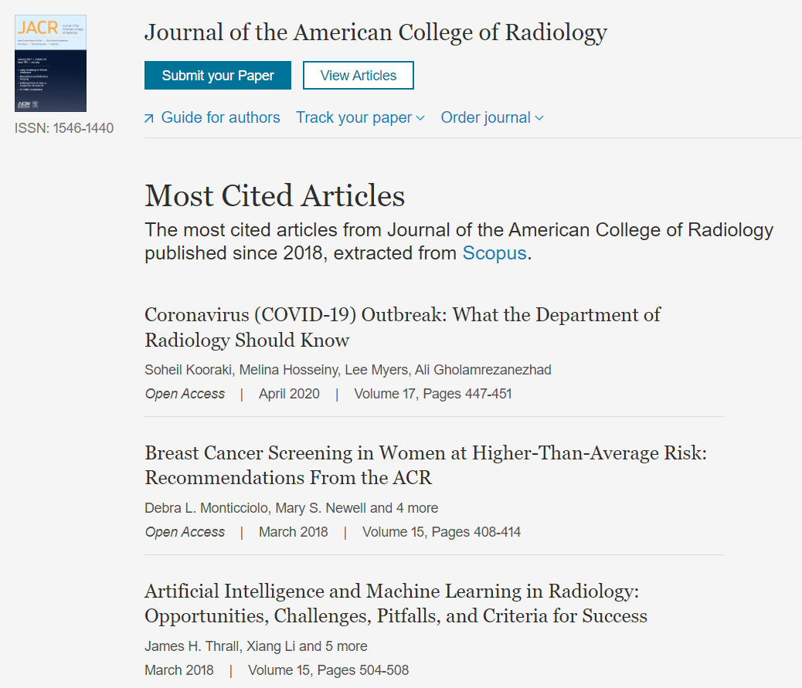

I am an Assistant Professor at the Massachusetts General Hospital (MGH) and Harvard Medical School (HMS), Department of Radiology, and an Affiliate Faculty Member at the Kempner Institute for Natural and Artificial Intelligence of Harvard University.
I received my postdoc training at MGH/HMS under the co-mentorship of Associate Prof. Quanzheng Li and Distinguished Professor, National Academy of Medicine member James H. Thrall. I earned my Ph.D. in Computer Science from the University of Georgia, supervised by AIMBE fellow, Distinguish Prof. Tianming Liu.
My primary research interest is artificial intellegnece for healthcare, with a focus on medical foundation models, medical generative AI, medical informatics, counterfactual causal inference, and neuroimaging.
Visit my LinkedIn for most update-to-date recruitment information.
Publications: 150+ peer-reviewed publications, h-index 47. See my Google Scholar for more information.
Our review paper, "Artificial General Intelligence for Medical Imaging Analysis", is selected as the Feature Article for IEEE Reviews in Biomedical Engineering. 
Our paper, "MediViSTA: Medical Video Segmentation via Temporal Fusion SAM Adaptation for Echocardiography", has been accepted by the IEEE Journal of Biomedical and Health Informatics. Read the full paper —>here.
This work introduces a 2D SAM adaptation model for medical video segmentation tailored for echocardiography. By incorporating parameter-efficient learning techniques (LoRA) and temporal fusion strategies, our approach effectively optimizes SAM, enhancing segmentation accuracy and ensuring consistency across frames.
Two papers accpeted by ICLR 2025:
“Enhancing Cognition and Explainability of Multimodal Foundation Models with Self-Synthesized Data”, our collaborative work with Prof. Ninghao Liu at UGA, tackles the challenge of making large multimodal models not only more accurate in domain-specific tasks but also capable of delivering clear, interpretable explanations. Read the full paper —>here.
"ECHOPulse: ECG Controlled Echocardio-gram Video Generation", leverages single-channel ECG signals (like from an Apple Watch) to generate corresponding cardiac ultrasound (echocardiogram) videos, pushing the boundaries of extreme cross-modality generation. Read the full paper —>here.
Our CME Review paper, "Large Language Models and Large Multimodal Models in Medical Imaging: A Primer for Physicians", has been accepted by the Journal of Nuclear Medicine. Read the full paper —>here.
The book "Discovering the Frontiers of Human-Robot Interaction" has been published by Springer Nature. We contributed the chapter "Robot Control via Natural Instructions Empowered by Large Language Models", which can be found —>here
We are collaborating with Harvard SEAS on research into medical robotics, with a UR5e robotic arm for our research into intelligent imaging. One of the most critical challenges in the field of control systems today is how to effectively and stably integrate Artificial General Intelligence (AGI) into robot control. In addition to our work on LLM-driven robot control, we are also conducting research on generative AI for guiding robot learning, as well as foundational models for surgical robotics.
Our patent, "Automated Detection and Management of Valvular Heart Disease Using Machine Learning" (US-20240379239-A1), is now public. Read the full document —>here.
Our long-paper submission, "MKRAG: Medical Knowledge Retrieval Augmented Generation for Medical Question Answering", received the Distinguished Paper Award at AMIA 2024. Its arXiv link can be found —>here. In this collaborative work with Prof. Ninghao Liu from the University of Georgia, we developed a comprehensive retrieval strategy to extract medical facts from an external knowledge base, and then incorporated them into the query prompt for the LLM. This work demonstrates the potential of model editing to enhance LLM performance, offering a practical approach to mitigate the challenges of black-box LLMs. 
Two podium abstracts presented at AMIA 2024:
"Cross-Modal Retrieval for Alzheimer's Disease Diagnosis Using CLIP-Enhanced Dual Deep Hashing," which leverages CLIP alignment for improved cross-modal (any two modalities) retrieval.
and
"Conditional Score-Based Diffusion Model for Cortical Thickness Trajectory Prediction," which uses diffusion models to predict the trajectory of cortical thickness change over time.
Serving as the PAR panel for NIH Academic-Industrial Partnerships for Translation of Technologies.
Two papers accepted by NeurIPS 2024:
"Eye-gaze Guided Multi-modal Alignment for Medical Representation Learning", where we explored how eye-gaze tracking enhances multi-modal learning for radiology applications. Read the full paper —>here.
and
"Biomedical Visual Instruction Tuning with Clinician Preference Alignment", investigated the alignment between biomedical visual models with clinician expertise. Read the full paper —>here.
Our paper, "A generalist vision–language foundation model for diverse biomedical tasks", is accepted by Nature Medicine. The BiomedGPT model is a lightweight, open-source generalist medical AI that excels across 25 datasets and 9 tasks, achieving 16 state-of-the-art results in a diversified array of medical tasks. Read the full paper —>here.
AIM-FM: Advancements In Medical Foundation Models: Explainability, Robustness, Security, and Beyond
We will host the First NeurIPS workshop AIM-FM: Advancements In Medical Foundation Models: Explainability, Robustness, Security, and Beyond. This workshop aims to explore the potential of Medical Foundation Models (MFMs) in smart medical assistance, thereby improving patient outcomes and streamlining clinical workflows, with an emphasize on the explainability, robustness, and security of the large-scale multimodal medical assistant, pushing forward its reliability and trustworthiness.
Our Editor's Blog article, "Can AI solve the clinical data problem?", is now online at Science, which illuminates both the potential benefits and the challenges of integrating AI into clinical workflows. Read the full article —>here.
Call for Papers: IEEE Transactions on Neural Networks and Learning Systems Special Issue: Advancements in Foundation Models
Guest Editors:
Tianming Liu, University of Georgia, USA
Xiang Li, Massachusetts General Hospital and Harvard Medical School, USA
Hao Chen, Hong Kong University of Science and Technology, Hong Kong, China
Yixuan Yuan, Chinese University of Hong Kong, Hong Kong, China
Anirban Mukhopadhyay, TU Darmstadt, Germany
Learn more at —>here.
Our Position Paper, "TrustLLM: Trustworthiness in Large Language Models", has been accepted by ICML 2024. This work was also recognized by Hugging Face as its daily paper and ranked #1 in likes. Read the full article —>here
MMMI 2024
This year, we will continue organizing the MICCAI workshop on Multiscale Multimodal Medical Imaging (MMMI 2024), together with the wonderful team from FAU and TUM organizing the 1st Workshop on Machine Learning for Multimodal/-sensor Healthcare Data (ML4MHD 2024).

Five papers accepted by MICCAI 2024:
"Volumetric Conditional Score-based Residual Diffusion Model for PET Denoising" —>
"F2TNet: FMRI to T1w MRI Knowledge Transfer Network for Brain Multi-phenotype Prediction" —>
"Conditional Score-Based Diffusion Model for Cortical Thickness Trajectory Prediction" —>
"Medical Image Synthesis via Fine-Grained Image-Text Alignment and Anatomy-Pathology Prompt" —>
"Hallucination Index: An Image Quality Metric for Generative Reconstruction Models" —>
Started serving as the Associate Editor for Data Intelligence.
Started serving as the Associate Editor for IEEE Transactions on Artificial Intelligence.
Our work on the development of a cyclic image to/from text model, "AdaMatch-Cyclic", has been accepted by ACL 2024 and is now availabl —>here. In this work we explored the fine-grained mapping between chest x-ray images and their corresponding radiology reports and developed generative model for the image and text correspondingly. Preliminary result shows that the cyclic generation model can accurately capture word-patch relationsihp and perform effective text generation (report writing) and image generation.
Started serving as the Associate Editor for BMC Biomedical Engineering.
Our work on evaluating the medical image understanding capability of GPT-4v, "Multimodal ChatGPT for Medical Applications: an Experimental Study of GPT-4V", is now availabl on arXiv. In this work, we found that the current version of GPT-4V is not recommended for real-world diagnostics due to its unreliable and suboptimal accuracy in responding to diagnostic medical questions. In addition, we delineate seven unique facets of GPT-4V's behavior in medical VQA task, highlighting its constraints within this complex arena. The paper has been recommended by Hugging Face —>here.
Our work on graph transformer representation of dynamic brain imaging data, "Large-scale Graph Representation Learning of Dynamic Brain Connectome with Transformers", was accepted by NeurIPS 2023 Temporal Graph Learning Workshop. In this collaborative work with Dr. Byung-Hoon Kim from Yonsei University College of Medicine, we developed a representation learning framework for modeling dynamic functional connectivity with graph transformers. By the novel "connectome embedding" concept developed in this work, we are able to characterize the position, structure, and time information of the functional connectivity graph within an integrated embedding. Experiment results from multiple fMRI datasets show state-of-the-art performance of the proposed framework in gender classification and age regression tasks. Its OpenReview link can be found —>here.
Our recent paper, "MediViSTA-SAM: Zero-shot Medical Video Analysis with Spatio-temporal SAM Adaptation", is now on arXiv. As the Segmentation Anything Model (SAM) has become prominent for its generalization abilities, we developed MediViSTA-SAM for adapting SAM to medical video data. The model can effectively capture both long and short-range temporal dependency structures through its cross-frame attention mechanism. Furthermore, MediViSTA-SAM utilizes a novel U-shaped encoder and an adapted mask decoder to handle objects of various dimensions. MediViSTA-SAM was tested on echocardiography datasets from multiple vendors/institutions and achieved state-of-the-art performance in segmenting the left ventricle and left atrium from echocardiogram video data.
Our research on fine-tuning LLM for radiation oncology, "RadOnc-GPT: A Large Language Model for Radiation Oncology", is now on arXiv. RadOnc-GPT is fined-tuned using an extensive dataset encompassing radiation oncology patient records and clinical observations sourced from Mayo Clinic Arizona. Clinical implication of RadOnc-GPT is investigated on three tasks: generating radiotherapy treatment plans, determining optimal radiation modalities, and providing diagnostic descriptions/ICD codes based on patient diagnostic details. When benchmarked against general-domain large language models, RadOnc-GPT has superior performance, characterized by its enhanced clarity, specificity, and clinical relevance. This work underscores the revolutionary potential of domain-centric language models for healthcare practice that demands specialized expertise.
Started working as the Affiliate Faculty Member at the Kempner Institute for Natural and Artificial Intelligence of Harvard University.
Our recent paper, "MA-SAM: Modality-agnostic SAM Adaptation for 3D Medical Image Segmentation", is now on arXiv. While the Segment Anything Model (SAM) has showcased stellar results in general-domain image segmentation, it needs further adaptation to be working on medical images due to its limitation to 2-D images. Recognizing the importance of the third dimension, either volumetric or temporal, we developed MA-SAM, a modality-agnostic framework tailored for a wide variety of 3D medical imaging modalities, equipping our efficient parameter fine-tuning strategy and the 3D adapters design. We tested MA-SAM on ten diverse datasets spanning 3D CT, 3D MRI, and surgical videos. The model can achieve superior performance over major medical segmentation algorithms, including nnU-Net, by notable margins. The code of MA-SAM is accessible on GitHub.
Our paper on analyzing ChatGPT-generated language data and its comparison to human-written language, "Differentiate ChatGPT-generated and Human-written Medical Texts", has been accepted by the JMIR Medical Education (JME). We analyzed the linguistic features of the ChatGPT-generated txt versus human-generated to uncover differences in vocabulary, part-of-speech, dependency, sentiment, perplexity, etc. We also developed A BERT-based model to detect medical texts generated by ChatGPT with high accuracy. Its arXiv version can be found —>here.
Our work on fine-tuning LLaMA2 for radiology, "Radiology-Llama2: Best-in-Class Large Language Model for Radiology", is now on arXiv. Radiology-Llama2 is a large language model specialized for radiology by fine-tuning a large dataset of radiology reports, targeting at generating coherent and clinically useful impressions from radiological findings. Quantitative evaluations using ROUGE metrics on the MIMIC-CXR and OpenI datasets demonstrate that Radiology-Llama2 achieves state-of-the-art performance compared to other large language models. Additional assessments by radiology experts highlight the model's strengths in understandability, coherence, relevance, conciseness, and clinical utility. The work illustrates the potential of domain-specific language models designed and tuned for specialized fields in healthcare. When properly evaluated and deployed, such models can transform fields like radiology by automating tasks and providing clinical decision-making support.
Our paper on the fine-tuning and adaptation of LLMs on radiology report data to develop foundation models for radiology, entitled "Tailoring Large Language Models to Radiology: A preliminary approach to LLM adaptation for a highly specialized domain", is accepted by Machine Learning in Medical Imaging (MLMI 2023) for oral presentation. In this work, we developed a domain-specific large language model (LLM) for radiology by fine-tuning LLaMA on the findings-impression pairs extracted from the radiology reports in the MIMIC dataset. The work demonstrated promising performance and show potential applications in radiological diagnosis, research, and communication, suggesting a promising direction for tailored medical language models with conversational abilities. Its arXiv version can be found —>here.
Our paper on view classification for echocardiogram ultrasound imaging, entitled "Multi-task Learning for Hierarchically-Structured Images: Study on Echocardiogram View Classification", has been accepted by the MICCAI Workshop of Special Interest Group on Medical Ultrasound. In this collaborative work with cardiologists and sonographers at Massachusetts General Hospital and Brigham and Women's Hospital, we developed a Multi-task Residual Neural Network (MTRNN) with a hierarchically structured output for echocardiogram view classification, showcasing superior performance. The design of this work can be extended to other data classification scenarios with hierarchical data labels as well.
Our abstract on predicting the early discharge of patients after receiving Transcatheter Aortic Valve Replacement (TAVR), entitled "Machine Learning Model for the Prediction of Early Discharge of Patient Underwent Transcatheter Aortic Valve Replacement Using Electronic Medical Record", has been accepted to be presented at the American Heart Association’s annual Scientific Sessions 2023 (AHA 2023). In this collaborative work with cardiologists at Massachusetts General Hospital and Brigham and Women's Hospital, we collected electronic health record (EHR) data from patients who underwent TAVR and trained a machine learning model to predict the early discharge (within two days) of patients, which has been critical for accelerating patient recovery and saving costs.
Our abstract on differentiating people with Alzheimer's disease and normal aging by their speech audio and transcripts, entitled "Alzheimer's Disease Prediction through Patients Speech Transcript Using Pre-trained Language Models", has been accepted to the presented at the American Medical Informatics Association (AMIA) 2023 Annual Symposium. This study explores methods for detecting combineing pre-trained language models, Graph Neural Networks (GNN), text data augmentation by ChatGPT, and contrastive learning for text-audio data fusion. Its arXiv version can be found —>here.
Joined the rank of Assistant Professor at Department of Radiology, Harvard Medical School and Massachusetts General Hospital.
MMMI2023
This year we will continue organizing the MICCAI workshop on Multiscale Multimodal Medical Imaging (MMMI 2023). If you work on related areas, we are looking forward to your paper submission. The submission deadline is July 14thJuly 31st, 2023.

Our paper on the open community bench-testing platform for reserach on neuron tracing, "BigNeuron: a resource to benchmark and predict performance of algorithms for automated tracing of neurons in light microscopy datasets" is accepted by Nature Methods and available at —>here. This work was initiated and devloped by the team led by Dr. Hanchuan Peng, who's a member of my Phd. committee.
Our absract on predicting the clinical outcomes (length-of-stay and readmission) of aortic stenosis patients after receiving Surgical Aortic Valve Replacement (SAVR)or Transcatheter Aortic Valve Replacement (TAVR), entitled "Machine Learning Model for Aortic Stenosis Patient Outcome Prediction", has been accepted to be presented at the AMIA 2023 Clinical Informatics Conference 2023. Risk stratification and patient outcome prediction are helpful for physicians in guiding clinical decision-making and the hospital’s resource allocation and patient management. In this work on preoperative aortic stenosis (AS) patient outcome prediction, we showed that by applying machine learning methods to a comprehensive list of the patient electronic health record (EHR) data, superior prediction performance could be achieved compared with the current regression-based risk score systems.
Our first paper on the language processing in medical domain, "ClinicalRadioBERT: Knowledge-Infused Few Shot Learning for Clinical Notes Named Entity Recognition" is accepted by International Workshop on Machine Learning in Medical Imaging (MLMI 2022)and available at —>here. In this paper, we proposed the knowledge-infused few-shot learning (KI-FSL) approach to develop the ClinicalRadioBERT model for the task of radiotherapy clinical notes named entity recognition (NER)..
Proceeding of MMMI 2022 as part of the MICCAI 2022 conference proceeding, published as Lecture Notes in Computer Science (LNCS) book series, is now available for free access via the MMMI 2022 official website at —>here. Note that the full proceeding is only accessible directed from that website, and will be available for 4 weeks. Cover of this proceeding can be downloaded —>here.
We have been awarded by the National Institutes of Health for 2-year support of our project, "Identification of Multi-modal Imaging Biomarkers for Early Prediction of MCI-AD Conversion via Multigraph Representation" (1R03AG078625-01). Alzheimer's disease (AD) will result in cognitive decline and dementia and is a leading cause of mortality in the growing elderly population. As a progressive disease, AD typically has an insidious onset with overlapping clinical features with the transitional state of Mild Cognitive Impairment (MCI). Analysis of the relationship between MCI and AD with a focus on the converting factors, by the co-modeling of a wide array of imaging methods, can help us in a deeper understanding of the disease mechanism, which can lead to more accurate early diagnosis and identification of better intervention techniques.
MMMI2022
This year we will continue organizing the MICCAI workshop on Multiscale Multimodal Medical Imaging (MMMI 2022). If you work on related areas, we are looking forward to your paper submission. The submission deadline is July 22nd, 2022.

We have been awarded by the National Institutes of Health for a 4-year support of our project, "Deep Learning Based Phenotyping and Treatment Optimization of Heart Failure with Preserved Ejection Fraction" (1R01HL159183-01A1). Heart failure with preserved ejection fraction (HFpEF) is a major public health problem that is rising in prevalence with the aging population. By performing deep phenotyping of the patients from their Cardiac Magnetic Resonance images and Electronic Health Record simultaneously, we aim to provide phenotypic-specific, individualized treatment optimization based on the current massive amount of clinical data using deep learning.
I have received the 2021 MGH Thrall Innovation Grants Award for funding my research of lung cancer screening by transformed chest X-ray imaging. The project is called "Chest Radiographs-based Lung Cancer Screening by the DeepProjection Technique" based on the DeepProjection technique previously developed by us which can generate near-real volumetric 3D CT image from a single 2D Chest Radiograph (CXR) image. By replacing CT scans with CXR-generated pseudo-CTs for lung cancer screening, we can reduce radiation doses, scan time and cost for the screening, as well as better availability for remote healthcare sites. News of this award can be found —>here, and covered by the Rad Times over —>here.
Our paper "Artificial Intelligence and Machine Learning in Radiology: Opportunities, Challenges, Pitfalls, and Criteria for Success" is awarded the "Most Cited Articles" of Journal of the American College of Radiology.

We have the pleasure to host the research topic of "Multi-Dimensional Characterization of Neuropsychiatric Disorders" in Frontiers in Neuroscience - Brain Imaging Methods. Link to this research topic can be found —>here. All research related to the identification of multi-modal biomarkers for psychiatric disorders and multi-modal fusion methodologies are welcomed! Deadline for the intention-to-submit is December 23rd, 2021.
Our work on multi-hospital federated learning for combined analysis of chest X-ray images and electronic health records data towards the prediction of COVID-19 patient's risk in the emergency department has been accepted by Nature Medicine. Its link can be found —>here (open access). This work, led by Mass General Brigham and NVIDIA, shows how federated learning enables creation of robust AI models for healthcare and other industries constrained by confidential and sparse data. Coverage of this work by NVidia can be found —>here.
Our work on severe outcome prediction and a clinical risk score (CO-RISK score) system for COVID-19 patient triage at emergency department is now online at arXiv.
In this study we constructed the "MGB Cohort", a database covering all patients suspected of COVID-19 presented to the emergency department at the four hospital sites of the MGB system. A total of 11,060 patients were used in the model development and validation, according to our inclusion/exclusion criteria. A deep learning system based on the architecture of Deep and Cross network was developed to predict the patient's outcome in 24/72 hours based on the EHR and imaging (CXR) data up to the initial present to the emergency department.
Bridging Medical Imaging and Reports: Learning Radiologist's Nuances via Fine-Grained Multi-Modal Alignment
—>
Enhancing Cognition and Explainability of Multimodal Foundation Models with Self-Synthesized Data
(ICLR 2025) —>
ECHOPulse: ECG controlled echocardio-grams video generation
(ICLR 2025) —>
MediViSTA: Medical Video Segmentation via Temporal Fusion SAM Adaptation for Echocardiography
(IEEE JBHI 2025) —>
Distribution-aware Fairness Learning in Medical Image Segmentation From A Control-Theoretic Perspective
—>
Large Language Models and Large Multimodal Models in Medical Imaging: A Primer for Physicians
(JNM 2025 CME Article) —>
Auggpt: Leveraging chatgpt for text data augmentation
(IEEE Big Data 2025) —>
Biomedical visual instruction tuning with clinician preference alignment
(NeurIPS 2024) —>
Eye-gaze guided multi-modal alignment for medical representation learning
(NeurIPS 2024) —>
Artificial General Intelligence for Medical Imaging Analysis
(IEEE Reviews in Biomedical Engineering 2024) —>
Conditional Score-Based Diffusion Model for Cortical Thickness Trajectory Prediction
(MICCAI 2024) —>
Medical Image Synthesis via Fine-Grained Image-Text Alignment and Anatomy-Pathology Prompting
(MICCAI 2024) —>
A generalist vision–language foundation model for diverse biomedical tasks
(Nature Medicine 2024) —>
Fine-Grained Image-Text Alignment in Medical Imaging Enables Explainable Cyclic Image-Report Generation
(ACL 2024) —>
Zero-Shot Novel View Synthesis of Wrist X-Rays Using Latent Diffusion Model
(ISBI 2024) —>
High-Resolution 3d Ct Synthesis From Bidirectional X-Ray Images Using 3d Diffusion Model
(ISBI 2024) —>
An iterative optimizing framework for radiology report summarization with ChatGPT
(IEEE TAI 2024) —>
MKRAG: Medical Knowledge Retrieval Augmented Generation for Medical Question Answering
(AMIA 2024 Best Paper) —>
Zero-shot relation triplet extraction as Next-Sentence Prediction
(Knowledge-Based Systems
2024) —>
Motion Correction and Super-Resolution for Multi-slice Cardiac Magnetic Resonance Imaging via an End-to-End Deep Learning Approach
(Computerized Medical Imaging and Graphics 2024) —>
Mask-guided BERT for few-shot text classification
(Neurocomputing 2024) —>
Coarse-to-fine Knowledge Graph Domain Adaptation based on Distantly-supervised Iterative Training
(BIBM 2023) —>
Graph-Based Counterfactual Causal Inference Modeling for Neuroimaging Analysis
(MICCAI Workshop 2023) —>
Tailoring Large Language Models to Radiology: A Preliminary Approach to LLM Adaptation for a Highly Specialized Domain
(MICCAI Workshop 2023) —>